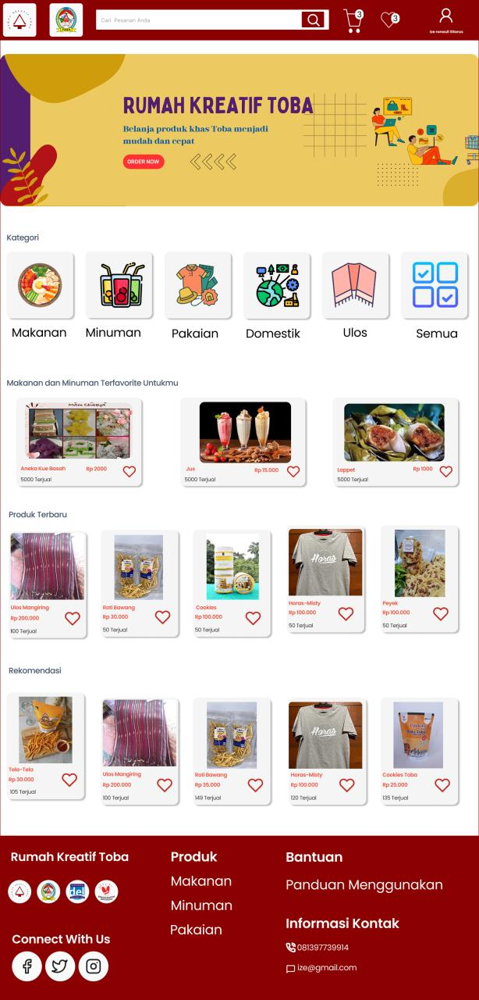
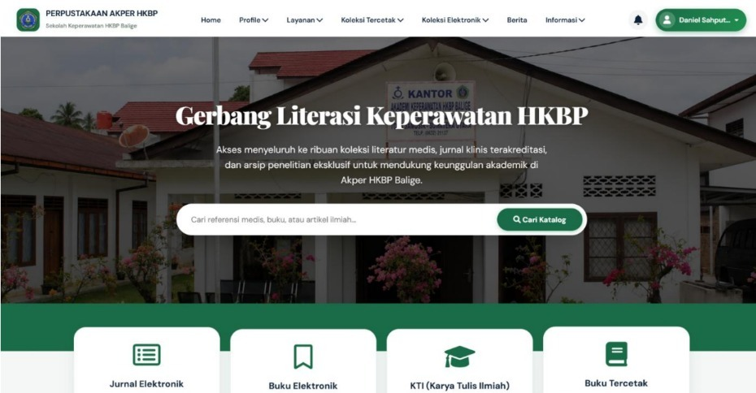
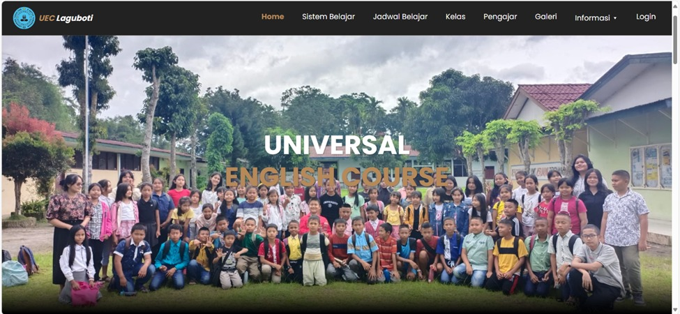
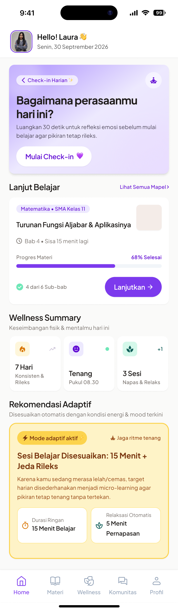
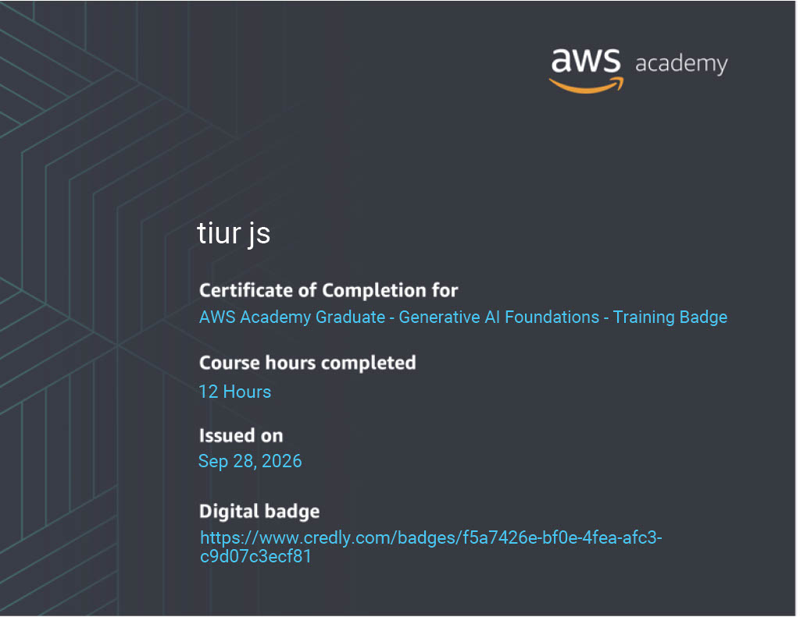
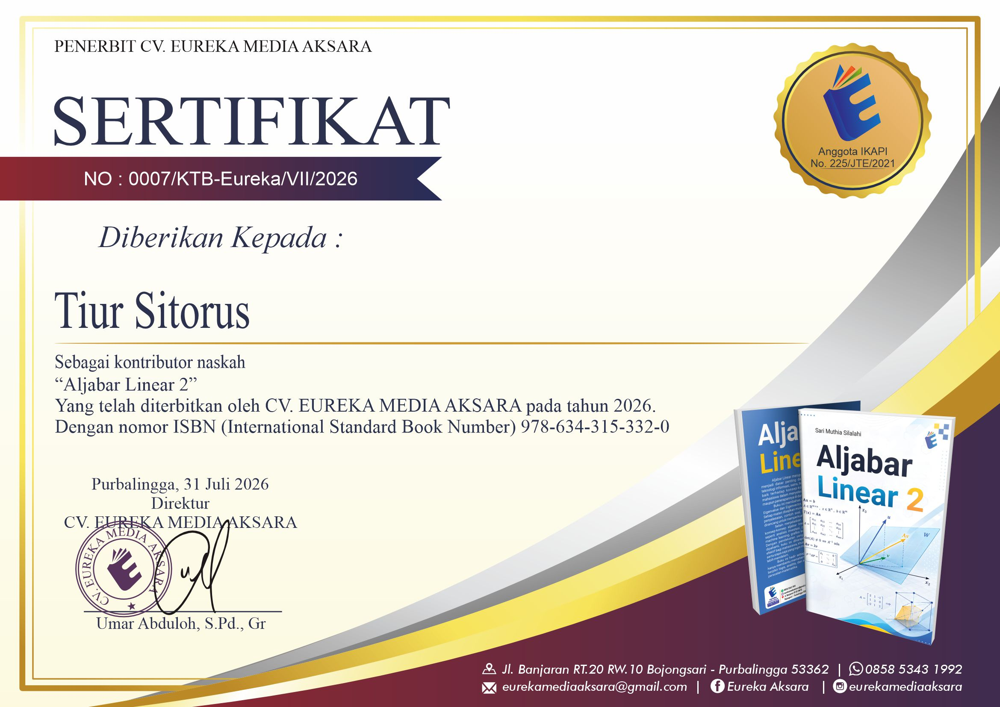
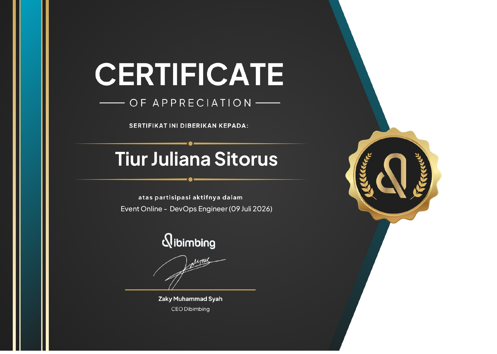
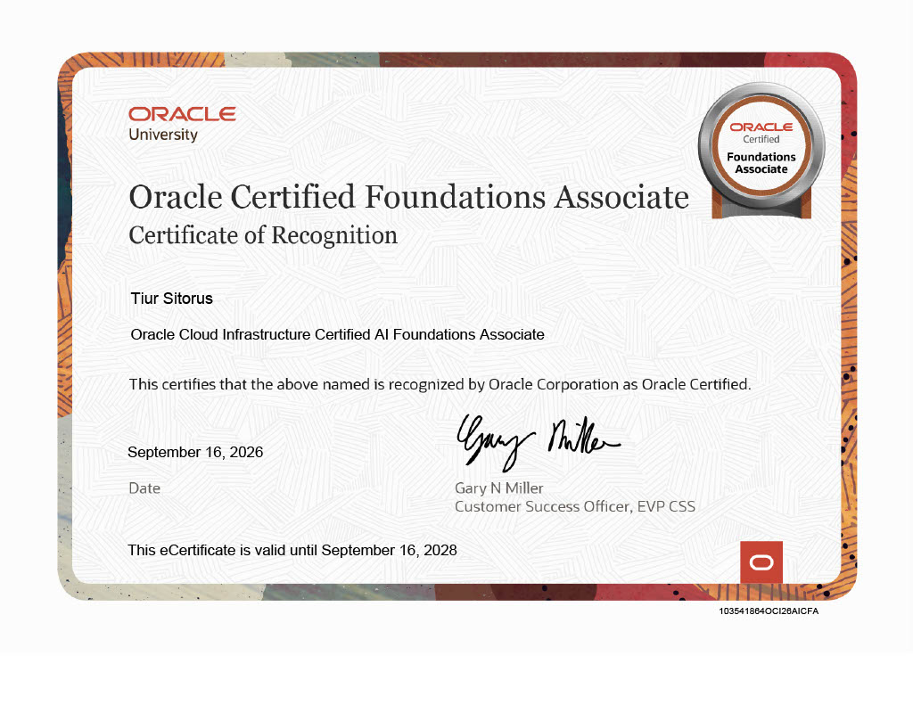

Functional testing
Positive and negative scenarios for login, user management, collections, borrowing, news and thesis upload.
IT diploma student with hands-on software testing (Katalon Studio, black-box testing) and system analysis (UML, BPMN) experience. Seeking a QA Tester or System Analyst opportunity.
An IT diploma student with hands-on experience in software testing (Katalon Studio, black-box testing) and system analysis (UML, BPMN), seeking a QA Tester or System Analyst opportunity.
Before a system is built and tested, it has to be understood. In our final project I worked on the analysis and design documents, from requirements to the database model.
Identified problems in the manual library process and wrote the Product Requirement Specification: goals, scope, functional and non-functional needs.
Modeled the current system and the target system, for example borrowing books, uploading theses and approving loans.
Use case diagram, user characteristics, class diagram and sequence diagrams for every create, read, update and delete flow.
Entity Relationship Diagram, Conceptual Data Model and Physical Data Model for the MySQL database.
Page layouts for admin, user and guest so developers and testers share the same picture.
The design documents became the reference for writing the test scenarios and expected results.
How I test software. This is the testing we did on the same final project, from writing test scripts to reporting the results.
Proyek Akhir 2 (team of 6). Laravel, PHP, MySQL. Three roles: admin, user, guest.
Positive and negative scenarios for login, user management, collections, borrowing, news and thesis upload.
Test scripts run in Katalon Studio so login, navigation and data management can be re-run quickly.
Authorization (user opening admin URLs), input validation, and checking that passwords are stored as hashes.
Response time with PageSpeed Insights and responsive UI checks with Chrome DevTools device toolbar.
Frontend to backend to database: data entered on the website is checked again in phpMyAdmin.
Role-based walkthroughs for admin, user and guest, plus a System Usability Scale questionnaire.
| ID | Scenario | Test data | Expected result | Status |
|---|---|---|---|---|
| TCA-01 | Login - positive | Valid NPM/NIDN + password | Admin is redirected to the dashboard | PASSED |
| TCA-02 | Login - negative | Wrong password | Login is rejected with an error message | PASSED |
| TCA-04 | Add member - negative | Required fields left empty | Form shows validation messages, no data saved | PASSED |
| SEC-01 | Authorization | User opens /admin/books directly | Access denied or redirected | PASSED |
| SEC-03 | Password hash | Check users table in phpMyAdmin | Password stored as a hash, not plain text | PASSED |
Feb 2026 – Jun 2026 Project
Final Year Project 2 (PA 2), Institut Teknologi Del
Designed and executed functional test cases with Katalon Studio as part of a team's 22 test cases, and designed the target system in BPMN with use case, class, sequence, ERD, CDM, and PDM diagrams.
View detailsFeb 2025 – Jun 2025 Project
Final Year Project 1 (PA 1), Institut Teknologi Del
Contributed to manual black-box functional testing across 37 test cases, documented the results in the Product Testing report, and modeled requirements with use case, BPMN, and sequence diagrams.
View details25-26 September 2026 Committee
Inauguration and Graduation Committee, Institut Teknologi Del
Prepared the venue, equipment, and logistics for the event, and coordinated with other divisions to make sure it ran smoothly and on schedule.
View details
Rumah Kreatif Toba is an individual UI/UX design project developed using Figma. The project focuses on creating an intuitive an...

The Final Project involved developing a library website for the HKBP Balige Nursing Academy using a microservices architecture....

The "Final Project 1" involved designing and developing a website for the Universal English Course (UEC) in Laguboti. The site ...

UI/UX design for a mobile application entered in the INVENTION 2026 competition (Udayana University). The app adapts the learni...




I am open to QA Tester and System Analyst opportunities. Send me a message through this form and I will reply by email.